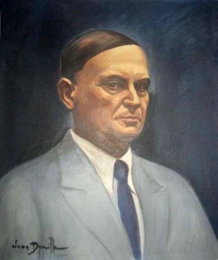
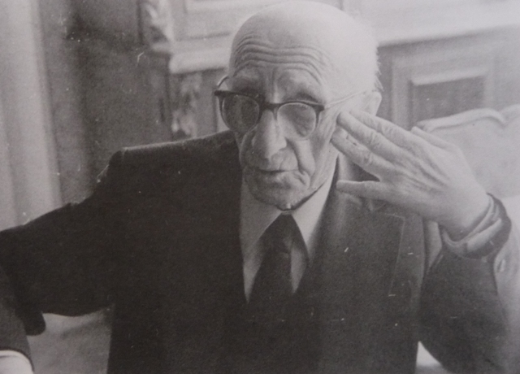
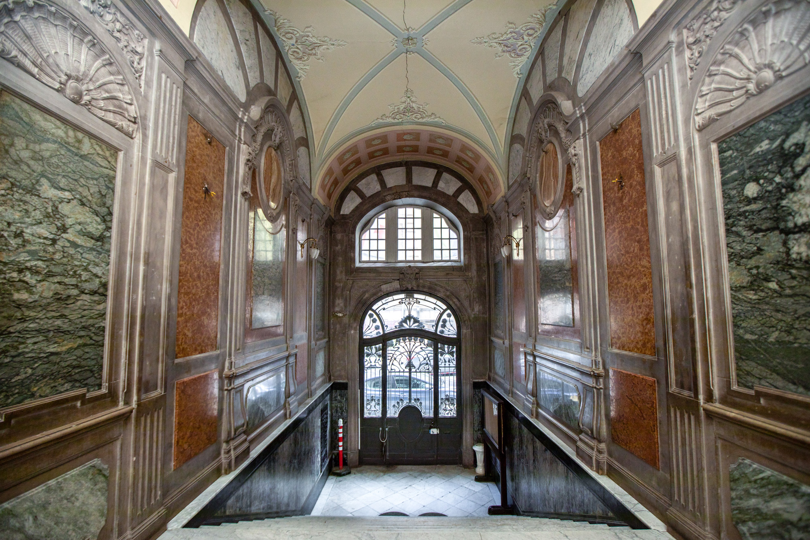

გენიალური ქართველი მწერალი და სცენარისტი (1928-1984). მისი ნაწარმოებები "მე, ბებია, ილიკო და ილარიონი", "თეთრი ბაირაღები" და "მე ვხედავ მზეს, როცა აყვავდა ნუში" საქართველოს ლიტერატურის ოქროს ფონდში შედის... იხილეთ მეტი

გამოჩენილი ქართველი მწერალი და დრამატურგი (1881-1955), ოზურგეთში დაბადებული. ოზურგეთის დრამატული თეატრი მის სახელს ატარებს. მისი პიესები დღესაც სცენაზე იდგმება... იხილეთ მეტი

ერთ-ერთი უდიდესი ქართველი მწერალი XX საუკუნისა (1891-1975). გურიაში, ქ. ოზურგეთში დაბადებული. მისი რომანები "დიდოსტატის მარჯვენა", "მთვარის მოტაცება" და სხვა შედევრები მსოფლიო ლიტერატურის ძეგლებია... იხილეთ მეტი

ქართველი მწერალი, პუბლიცისტი და საზოგადო მოღვაწე (1905-1986). გურიაში დაბადებული, მისი ნაწარმოებები ასახავს ქართული სოფლის ცხოვრებას და ტრადიციებს უაღრესად ავთენტურად... იხილეთ მეტი
გამოჩენილი ქართველი მწერალი, პოეტი და დრამატურგი (1884-1962). თუმცა ჩოხატაურში დაბადებული, გურიასთან მჭიდროდ იყო დაკავშირებული. მისი ნაწარმოებები ქართული მოდერნიზმის საუკეთესო ნიმუშებია... იხილეთ მეტი
ქართველი მწერალი და თარჯიმანი (1893-1986). გურიის რეგიონთან დაკავშირებული მისი ნაწარმოებები ასახავს ამ მხარის ბუნებას, ადამიანებს და ტრადიციებს... იხილეთ მეტი
ოზურგეთის მხარეთმცოდნეობის მუზეუმში შეინახება გურიელი მწერლების პირადი ნივთები, ხელნაწერები და პირველი გამოცემები. მუზეუმი ასევე ინახავს გურიის ისტორიის უნიკალურ არტეფაქტებს... იხილეთ მეტი
გურიაში შემორჩენილია რამდენიმე ცნობილი მწერლის მემორიალური სახლი-მუზეუმი, სადაც დღესაც შეგიძლიათ იგრძნოთ ამ დიდი შემოქმედების სულისკვეთება და მათი შემოქმედების ატმოსფერო... იხილეთ მეტი
გურიაში ჩატარდება ლიტერატურული ტურები, რომლებიც მოგზაურებს გაეცნობინებათ ცნობილი მწერლების დაბადების ადგილებს, მუზეუმებს და იმ ლოკაციებს, სადაც იქმნებოდა მათი ნაწარმოებები... იხილეთ მეტი